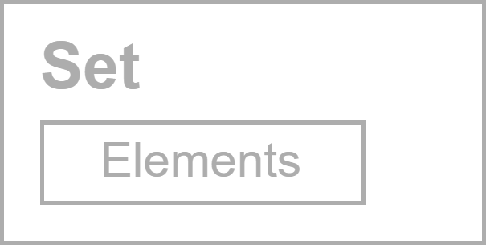
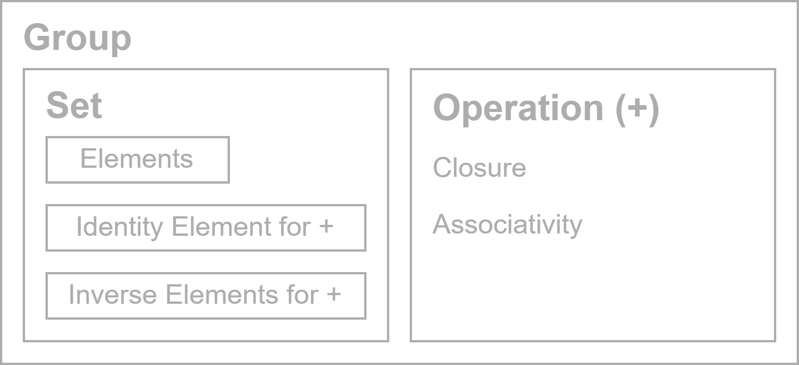
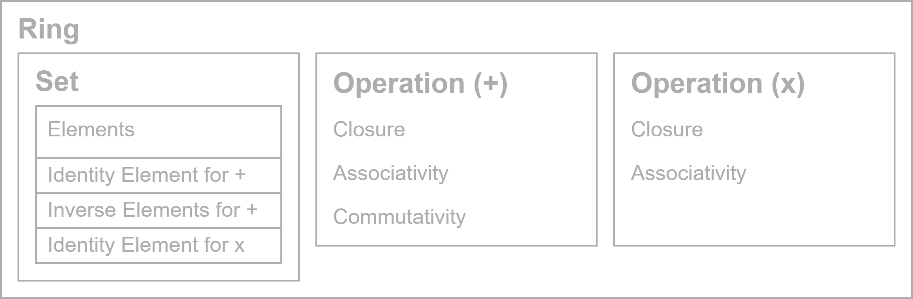
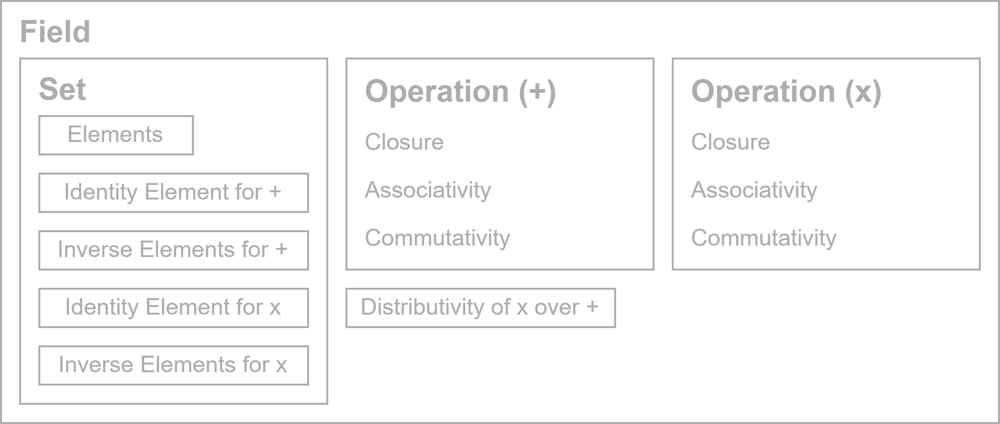

Introduction
This section is a bit different than the others as it doesn't really have anything to do with linear algebra.
Instead, it covers sets, binary operations, and explains some key algebraic structures as seen in
abstract algebra with an emphasis on fields.
Knowing these other structures simplifies the explanation of vector spaces and is also just nice for future reference.
(plus abstract algebra is cool)
We'll start with a set, then a group, and each slide will specialize from there.
Sets
All structures in algebra consist of something known as a set.
Though they aren't a structure by themselves, these sets are collections of different items called elements.
Sets can have any number of elements or infinite elements, and these elements can be anything.
Examples:
- The set of all people named John (finite set of people)
- Integers/Rational numbers/Real numbers.
(infinite set of numbers)
- Every even number from 1-100 (finite set of numbers)

We'll use a diagram like
this to show what each
structure consists of.
Binary Operations
Simply put, a binary operation takes two elements from a set and produces some result.
(Addition, multiplication, vector addition, exponentiation, etc.)
We'll cover four main properties an operation might possess:
For an operation \(\circ\)
- Closure: When the operation \(\circ\) is applied on two elements in a set, the result is also in that set.
We say the set is closed under the operation \(\circ\).
- Associativity: The statement \((a \circ b) \circ c = a \circ (b \circ c)\) always holds true.
- Commutativity: The statement \(a \circ b = b \circ a\) always holds true (order doesn't matter)
For an operation \(\circ\) and an operation \(\star\)
- Distributivity: The statement \(a \circ (b \star c) = (a \circ b) \star (a \circ c)\)
Identity
For a set and an operation ∘, an identity is a unique identity element which satisfies the axiom
\(a \circ e = e \circ a = a\)
(similar to how anything + 0 gives back the same thing, or how anything * 1 also gives back the same thing)
Inverse
For a set and an operation \(\circ\), each element of the set may also have an inverse for \(\circ\), which satisfies the axiom
\(a \circ a^{-1} = a^{-1} \circ a = e\)
(similar to how anything + its negative gives back \(0\), or the identity)
Inverse elements are a generalization of negatives and reciprocals.
Groups
For a set to be an algebraic structure, it needs a binary operation which follows certain rules known as axioms.
These axioms would be like the properties we looked at earlier.
Groups are the most basic algebraic structure. They must be equipped with a binary operation which is closed and associative.
There must also be an identity and inverse for the operation.
An example would be the integers only equipped with addition.
As an aside, if the binary operation is also commutative, the structure is known as an abelian group or a commutative group.
Group Diagram

Rings
Rings are a more specialized structure than a group. Rings have two operations,
traditionally called addition (+) and multiplication (*).
Addition must be closed, associative, commutative, have an identity, and have inverses /negatives.
Multiplication must be closed, associative, and have an identity, but commutativity and inverses are not required, so a ring has no concept of a reciprocal.
An example would be the integers with addition and multiplication.
As an aside, if multiplication is commutative, the structure is known as a commutative ring.
Most of the time when working with rings they are commutative so this may not be explicitly stated.
Ring Diagram

Fields
Fields are a more specialized structure than a ring. They also have addition and multiplication.
Addition must be closed, associative, commutative, have an identity, and have inverses/negatives. (same as before)
Multiplication must be closed, associative, commutative, have an identity, and have inverses/reciprocals. (same as addition)
Also, multiplication must be distributive over addition: \(a *(b + c) = (a * b) + (a * c)\)
An example would be the rational numbers or all real numbers.
Fields also indirectly imply the existence of subtraction and division, as they are the same as addition and multiplication but the
second argument is inverted.
Field Diagram

Binary Operations and Axioms Summary
Sets are a collection of finite or infinite elements. Every algebraic structure consists of at least one.
A set is said to be closed under a binary operation if the result of applying that operation on two elements is always still within the set.
If a binary operation is associative, parentheses in an expression can be moved freely around.
f it's commutative, the two arguments can be swapped. All without changing the value.
An operation can also be distributive over another, where the distrubitive property applies.
When an operation is applied between its identity and any element, the result is the unchanged element.
When an operation is applied between an element and its inverse, the result is the identity.
Inverse elements are a generalization of negatives and reciprocals.
Algebraic Structures Summary
Algebraic structures are a set equipped with some operation that follows certain axioms.
These operations are always at least closed and associative.
Groups are the most basic algebraic structure. They have one operation which has an identity and inverses.
Rings are structures that have two operations, addition and multiplication.
Addition is commutative, and has an identity and inverses. Multiplication only has an identity.
Fields also have two operations, addition and multiplication. Both addition and multiplication are commutative,
and have an identity and inverses. Multiplication must also be distributive over addition.
Subtraction and division are the same as addition and multiplication but the second argument is inverted.